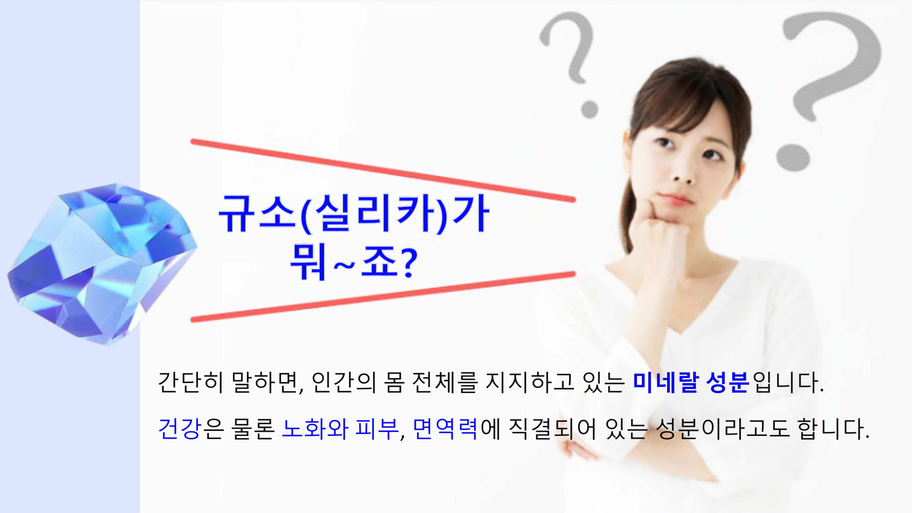
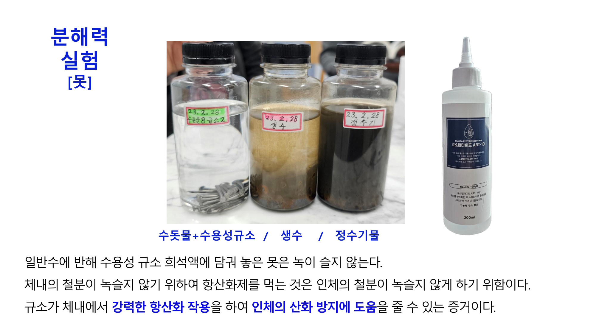
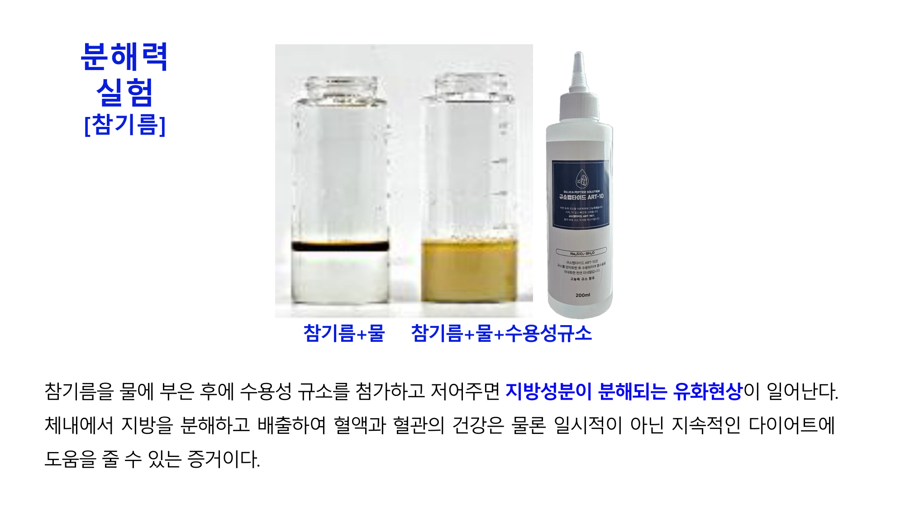
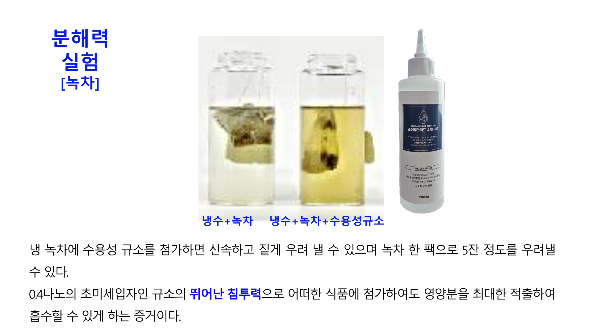
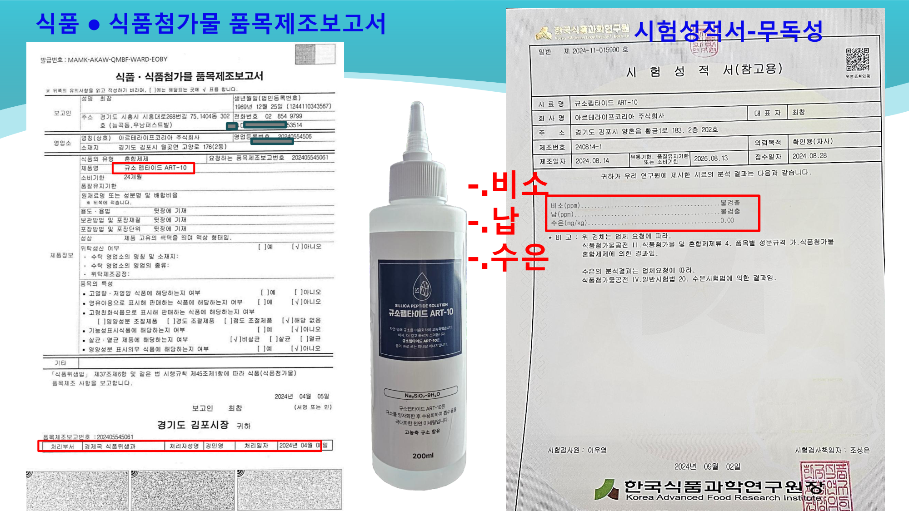

인간의 몸 전체를 지지하고 있는 미네랄 성분, 규소(실리카).
하지만 우리 몸을 지탱하는 이 필수 미네랄은 40세가 되면 태어날 때의 절반 수준으로 급격히 감소합니다. 체내에서 스스로 합성되지 않기 때문에 외부로부터 반드시 섭취해야만 합니다.
콜라겐 결합력이 떨어져 탄력이 저하되고 주름이 깊어집니다.
칼슘 운반이 막혀 골밀도가 낮아지고 골다공증의 원인이 됩니다.
혈관벽에 지방이 쌓이고 딱딱해지며 심혈관 질환을 유발합니다.
영양 공급이 끊겨 윤기가 사라지고 얇아지며 탈모가 가속화됩니다.
질병과 노화의 가장 큰 주범인 활성산소를 맹물로 중화시켜 소변과 땀으로 배출합니다.
세포 노화를 막고 면역력을 근본적으로 끌어올리는 기적의 메커니즘입니다.

규소펩타이드 ART-10은 0.4나노의 초미세입자로 이루어져 있어, 끈적해진 혈액 속 지방을 산산조각 내어 배출하고 세포 깊숙이 100% 흡수됩니다.

▲ 참기름(지방)이 완벽하게 분해되는 유화 현상

▲ 찬물에서도 영양분을 100% 적출해 내는 침투력
세포막과 콜라겐을 결합시키는 규소가 젊음을 되찾아 줍니다.
"아무리 칼슘을 먹어도 뼈로 가지 않는다면?"
규소는 칼슘을 뼈로 운반하는 '화물차' 역할을 합니다. 규소가 없으면 칼슘은 골밀도를 높이지 못하고 혈관에 쌓이게 됩니다. 성장기 뼈 발달과 골다공증 예방에 규소는 필수 불가결한 미네랄입니다.
"콜라겐을 강력하게 묶어주는 시멘트"
규소가 부족하면 피부가 늘어지고 주름이 깊어지며 탈모가 가속화됩니다. 체내 규소가 충만해지면 끊어졌던 콜라겐이 강력하게 묶여 모발이 굵어지고 잃어버린 피부 탄력을 빠르게 되찾게 됩니다.
의학계가 주목하는 수용성 규소의 놀라운 메커니즘
혈관 내 축적된 중성지방과 유해물질, 혈전 등을 산산조각 내어 소변과 땀으로 배출시킵니다. 다이어트와 고지혈증에 탁월합니다.
-400mv의 강력한 환원력으로 질병의 주범인 활성산소를 맹물로 중화시킵니다. 세포 노화를 막고 면역력을 근본적으로 끌어올립니다.
굳어지고 딱딱해진 혈관벽에 작용하여 원래의 탄력성을 회복시킵니다. 동맥경화, 뇌졸중 등 심혈관 질환 예방의 핵심입니다.
상처 부위나 위장 내 염증 수치를 빠르게 떨어뜨리며, 대장균 등 바이러스가 살 수 없는 청결한 체내 환경을 만듭니다.
일반 영양제와 달리 세포막보다 훨씬 작은 나노 입자로 장내 모세혈관 끝까지 100% 흡수되어 즉각적인 효과를 나타냅니다.
불면증, 우울증, 만성피로를 유발하는 자율신경 실조를 바로잡아 교감신경과 부교감신경의 균형을 되찾아 줍니다.
수용성 규소가 만들어낸 믿을 수 없는 실제 호전 사례들을 별도 페이지에서 확인하세요.
아래 영상을 통해 규소의 효능을 확인해 보세요!
순도 99.8% 차돌, 1,650도 고열 가공.
타사 대비 763배 높은 압도적 함유량 (2,553mg/L)

몸이 치유되면서 나타나는 긍정적인 '명현 현상'입니다.
명현 현상은 몸이 좋아지면서 나타나는 일시적인 진통입니다. 두통, 졸음, 피부 발진 등은 체내 깊숙이 박혀있던 독소가 분해되어 밖으로 배출되는 긍정적인 치유 과정입니다.
반응이 심할 경우 1~2일 정도 섭취를 쉬거나 농도를 연하게 타서 드셔도 됩니다. 일반적으로 수일 내에 감소하며 신체가 정화되는 긍정적인 신호이므로 안심하셔도 좋습니다.
신경통, 관절염, 타박상 등 과거 다쳤거나 염증이 있던 부위가 찌릿하게 더 아플 수 있습니다. 이는 규소가 손상된 세포 조직을 복구하기 위해 혈류를 집중시키면서 발생하는 치유 반응입니다.
혈액이 산성화되어 있거나 신경계가 극도로 지쳐있던 분들에게 주로 나타납니다. 세포가 안정화되고 이완되면서 몸이 억눌렸던 휴식을 요구하는 자연스러운 현상입니다.
간 기능 저하, 대장 독소, 혈압 계통의 이상이 있던 분들에게 나타납니다. 체내의 지용성 독소들이 피부 땀샘을 통해 밖으로 강제 배출되면서 일시적으로 나타나는 해독 과정입니다.
신장 및 장 기능이 회복되는 과정입니다. 특히 숙변이 제거되고 위장 기능이 정상화되는 과정에서 냄새가 독한 가스나 설사가 발생할 수 있으나 며칠 내로 속이 아주 편안해집니다.
초기에는 약간의 두통이나 어지러움, 미열이 발생할 수 있습니다. 숙변이 제거되기 시작하고 방귀가 자주 나옵니다. 몸의 대청소가 시작되는 시기입니다.
명현 현상이 가라앉고 피부가 눈에 띄게 부드러워집니다. 혈액 순환이 원활해지며 기미와 주근깨 같은 색소 침착이 서서히 옅어지기 시작합니다.
놀라운 신체 재생이 일어납니다. 발모가 촉진되고 성기능이 개선되며 갱년기 장애가 극복됩니다. 체내 불필요한 지방이 2~6kg 가량 빠지며 항상 활력이 넘치는 체질로 완벽히 개선됩니다.